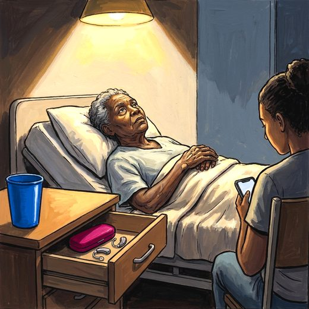

Consulta rápida à beira do leito
Condutas, doses e interações.
Referências da aula · 10
- Santos JFD, et al. Factors associated with pressure injuries in bedridden older adults in Primary Health Care. Rev Bras Enferm. 2026;79:e20250163. doi:10.1590/0034-7167-2025-0163. PMID 42848588.PubMedDOI
- European Pressure Ulcer Advisory Panel, National Pressure Injury Advisory Panel, Pan Pacific Pressure Injury Alliance. Prevention and Treatment of Pressure Ulcers/Injuries: Clinical Practice Guideline. The International Guideline. 3rd ed. Haesler E, editor. EPUAP/NPIAP/PPPIA; 2019.
- Edsberg LE, Black JM, Goldberg M, McNichol L, Moore L, Sieggreen M. Revised National Pressure Ulcer Advisory Panel pressure injury staging system. J Wound Ostomy Continence Nurs. 2016;43(6):585-97. PMID 27749790. doi:10.1097/WON.0000000000000281.PubMedDOI
- Inouye SK, Westendorp RGJ, Saczynski JS. Delirium in elderly people. Lancet. 2014;383(9920):911-22. PMID 23992774. doi:10.1016/S0140-6736(13)60688-1.PubMedDOI
- Inouye SK, Bogardus ST Jr, Charpentier PA, et al. A multicomponent intervention to prevent delirium in hospitalized older patients. N Engl J Med. 1999;340(9):669-76. PMID 10053175. doi:10.1056/NEJM199903043400901.PubMedDOI
- Nicolle LE, Gupta K, Bradley SF, et al. Clinical practice guideline for the management of asymptomatic bacteriuria: 2019 update by the Infectious Diseases Society of America. Clin Infect Dis. 2019;68(10):e83-e110. PMID 30895288. doi:10.1093/cid/ciy1121.PubMedDOI
- Resnick NM. Urinary incontinence. Lancet. 1995;346(8967):94-9. PMID 7603221. doi:10.1016/s0140-6736(95)92117-6.PubMedDOI
- Covinsky KE, Pierluissi E, Johnston CB. Hospitalization-associated disability: “She was probably able to ambulate, but I'm not sure”. JAMA. 2011;306(16):1782-93. PMID 22028354. doi:10.1001/jama.2011.1556.PubMedDOI
- Krumholz HM. Post-hospital syndrome — an acquired, transient condition of generalized risk. N Engl J Med. 2013;368(2):100-2. PMID 23301730. doi:10.1056/NEJMp1212324.PubMedDOI
- Freitas EV, Py L, organizadores. Tratado de Geriatria e Gerontologia. 5ª ed. Rio de Janeiro: Guanabara Koogan; 2022.
Documentos oficiais
Leis e publicações do Ministério da Saúde sobre o cuidado da pessoa idosa, de acesso livre.
Abrir os documentos